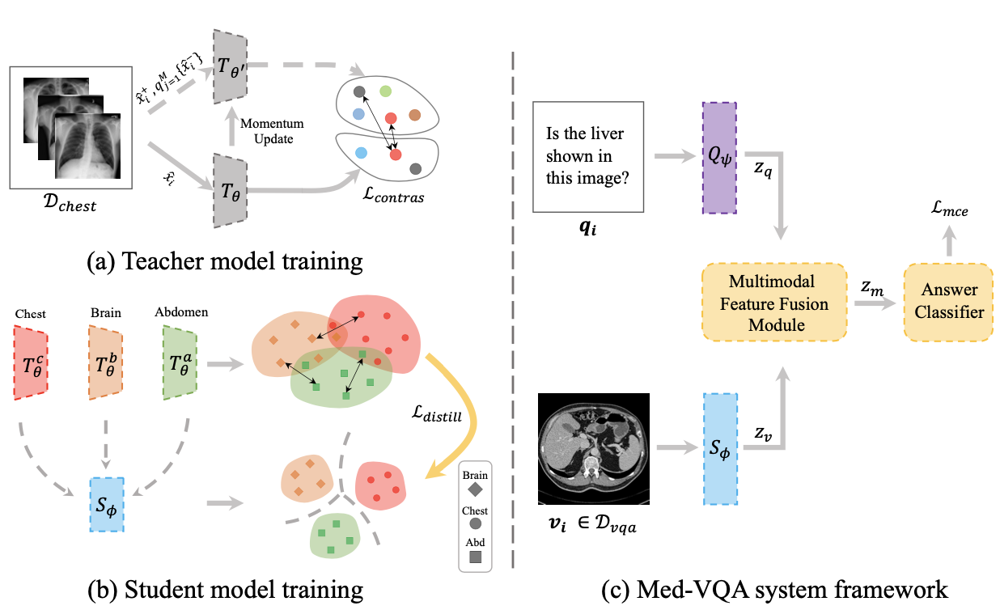
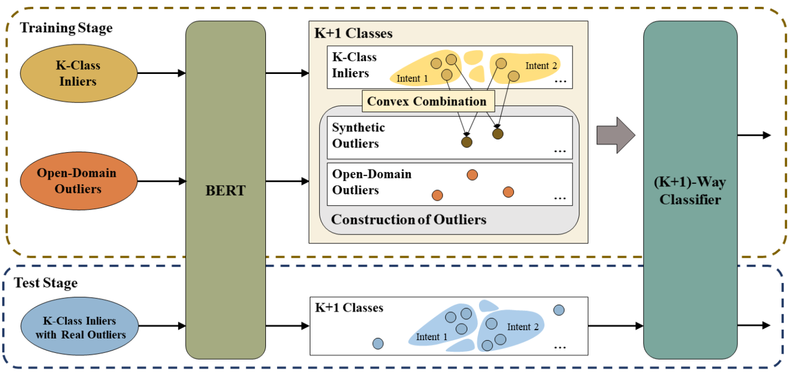
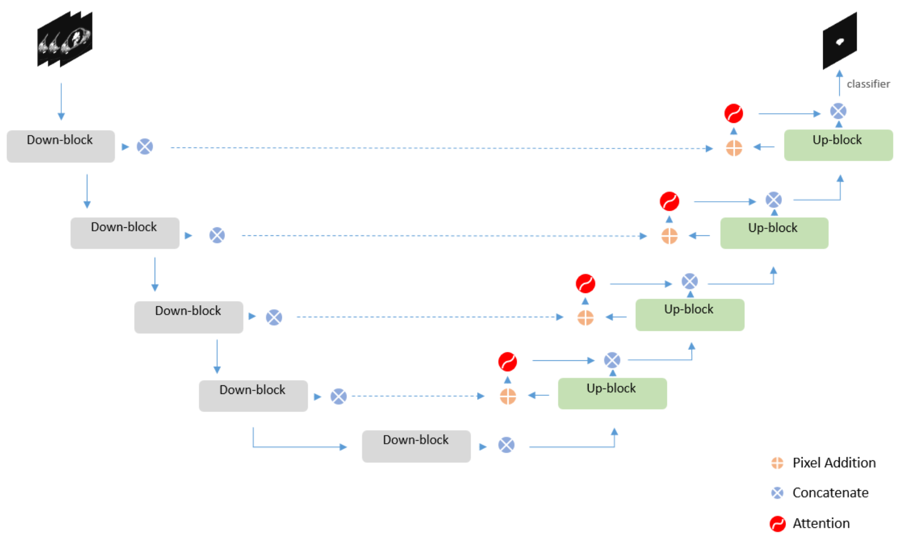
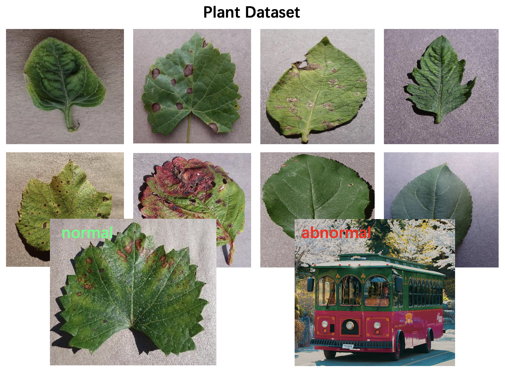

Bo Liu
I am a first-year M.Phil. student at The Hong Kong Polytechnic University.
Email: boliu.kelvin@gmail.com
Github / CV
Research Interests
- Multi-modal Learning (Vision-and-Language): visual question answering, image-text retrieval, image caption generation
- Machine Learning: self-supervised learning, transfer learning
- Medical Image Analysis: segmentation
Education
-
The Hong Kong Polytechnic University, Hong Kong S.A.R.Sep. 2020 - Present
M.Phil. in Computer Science
Advisor: Dr. Xiaoming Wu -
Machine Intelligence Laboratory, Sichuan University, ChinaOct. 2018 - Dec. 2019
Research Intern
Topic: Assisting radiotherapy planning via deep neural networks
Advisor: Prof. Yi Zhang -
Sichuan University, Chengdu, ChinaSep. 2015 - June. 2019
B.Eng. in Software Engineering
Publications
* indicates equal contribution





Research Experience

Medical-BERT: Cross-modal Pre-training with Medical Image-Text Data
Advisor: Xiaoming Wu | The Hong Kong Polytechnic University | Jun. 2021 - Present
While vision-and-language tasks in the medical domain have extensive benefits, their development is still at the initial stage
due to the limitations of current benchmarks, e.g., no visual bounding boxes. Therefore, we investigate how to design useful pre-tasks
to pre-train a cross-modal BERT with external image-text data for downstream tasks in the medical domain:
(1) Visual question answering; (2) Image-Text retrieval; (3) Image caption generation
[Code]
[Code]

An Organ-Centered Bi-lingual Medical Knowledge Graph
Advisor: Xiaoming Wu | The Hong Kong Polytechnic University | Jun. 2021 - Nov. 2021
Medical knowledge graphs (MKGs) play an important role in medical vision-language tasks, but most of them contain too redundant nodes or
relations to be utilized. To meet the need for practical usage, I design a simple but domain-specific medical knowledge graph, which contains
organ, body system, organ-related diseases, and knowledge about disease such as symptoms or causes.
[Data] [System] Neo4j Database
[Data] [System] Neo4j Database

Medical Image Question Answering
Advisor: Xiaoming Wu | The Hong Kong Polytechnic University | May 2020 - Present
Medical visual question answering is a task that given a radiology iamge and a clinical question about it, system should output a correct answer.
The development of it is restricted by small-scale training dataset. We push forward it by: (1) Introducing a new benchmark filling the gap toward general ones1
(containing a new labeling system4);
(2) Enhancing reasoning ability of model2; (3) Designing a new pre-training framework for visual feature extractor3
[PDF1], [PDF2], [PDF3], [Code4] PyQT5 Application
[PDF1], [PDF2], [PDF3], [Code4] PyQT5 Application

Automated Contouring of Esophagus Clinical Target Volumes and Organs at Risk by Using Deep Neural Networks
Advisor: Yi Zhang | Sichuan University | Jun. 2019 - Dec. 2019
An effective way to cure esophageal cancer is radiotherapy treatment, in which precise contouring of clinical target
volume and organs at risk is a vital step. This task is challenging especially for the esophagus due to its versatile
and irregular shape and poor contrast to neighboring tissues. To overcome it, I propose a 2D end-to-end segment network
named Attention Dual-Path U-Net (ADPU), which incorporates dual-path network and attention mechanism into U-Net and achieves
state-of-the-art results in fewer parameters.
[PDF] [Code]
[PDF] [Code]

Anomaly Image Detection in Plant Image Dataset
Advisor: Yi Zhang | Sichuan University | Jan. 2019 - May 2019
When a plant network recognizes the species of a plant image during the test phase, it may meet an image outside the “normal distribution” of
what plants look like, and fail to distinguish it. To avoid that, I
use the ImageNet dataset (except plant) to imitate the anomaly distribution and original plant dataset as the normal distribution, and
train an additional model to do two-way classification, helping plant network refuse non-plant image.
[PDF] [Code]
[PDF] [Code]
Selected Projects

Medical Visual Question Answering System for Self-Training
Advisor: Xiaoming Wu | The Hong Kong Polytechnic University | Apr. 2021 - May 2021
Medical visual question answering has enormous potential in assisted diagnosis and education. Thus, I design
a practical system to help intern doctors or even common people do self-training: they can upload or
choose a radiology image and ask some questions about it, the system could feedback an answer as a reference.
[Code] PyQT5 Application
[Code] PyQT5 Application

DeepCell: Automatic Segmentation System for Pathological Whole Slide Images
Advisor: Yi Zhang | Sichuan University | Mar. 2019 - Jun. 2019
The morphological clues of various cancer cells are very important for pathologists to determine the stage of cancer, making
the segmentation of pathological whole slide images necessary. Based on ASAP system used for opening WSI image, I add the automatic
segentation module and report generation module.
[Code] QT5 Application
[Code] QT5 Application

Predicting Term Deposit Subscriptions by exploring Bank Marketing Dataset
Winter Training Camp| University of California, Berkeley | Dec. 2018 - Jan. 2019
When given 50 attributes of a person such as age, how can the financial institution have greater effectiveness to determine if he/she will deposit?
In this project, I investigate the relationship between different attributes and then do binary classification by utilizing classical machine learning
algorithms like Logistic Regression, kNN, and Random Forest.
[Code]
[Code]

Crop Disease Classification Based on Deep Learning
Advisor: Yi Zhang | Sichuan University | Oct. 2018 - May 2019
Crop disease classification system could help farmers find the fatal diseases as soon as possible. To this end, I design a c/s structure application:
(1) in client: user could upload photos through developed WeChat Mini Program; (2) in server: pre-trained ResNet50-v2 model will recongnize the type of crop disease, and then feedback
the result through Django Framework.
[Code] WeChat Mini Program
[Code] WeChat Mini Program
Honors & Awards
-
TAL Outstanding Graduates Scholarship2019
-
Outstanding Graduates Award, Sichuan Province2019
-
Microsoft Imagine Cup Champion Award, China2018
-
National Scholarship2018
-
Sichuan University Scholarship2016 - 2017
-
Admission to Innovation Class, Sichuan University2015